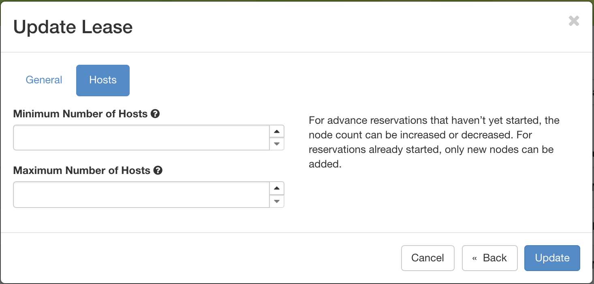
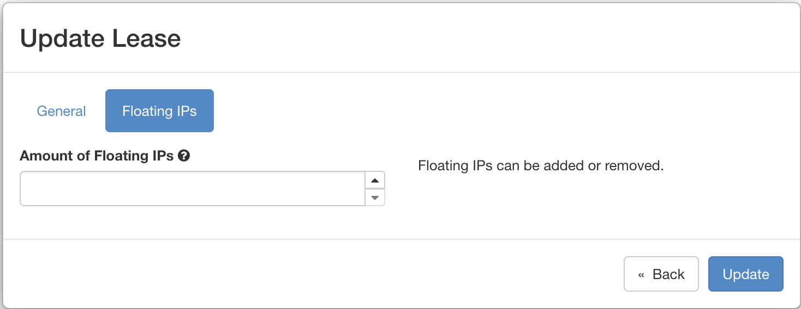

Unlike virtual resources on a regular on-demand cloud, physical resources on
Chameleon must be reserved before using them for an experiment. Once a
reservation has been accepted, users are guaranteed that resources will be
available at the time they chose (except in extraordinary circumstances such as
hardware or platform failures), which helps to plan large scale experiments.
Chameleon resources are reserved via Blazar which provides Reservation as a
Service for OpenStack.
Three types of resources can be reserved: physical bare metal hosts, network
segments (VLANs), and floating IPs.
Provisioning and Managing Resources Using the GUI
To make reservations of the resources, first log into the Horizon web interface
- either CHI@TACC or CHI@UC. Then, choose a project and configure your local
timezone. For details on how to choose a project and update personalized
settings, please see Graphical User Interface (GUI).
In the navigation sidebar, go to the Reservations section and click Leases.
To discover when resources are available, You can access the lease calendars by
clicking on the Host Calendar button for physical hosts and clicking on the
Network Calendar button for VLANs. This will display a Gantt chart of the
reservations which allows you to find when resources are available. The Y axis
represents the different physical nodes in the system and the X axis
represents time.
The nodes and VLANs are identified by their UUIDs. The colors are used to
indicate different reservations, i.e. the resources that belong to the same
reservation are colored the same. Hovering over the chart provides the
details about the reservation. To change the display time frame, click on
1d, 1w, and 1m buttons or fill in the start and end times.
Once you have chosen a time period when you want to reserve resources, go back
to the Leases screen and click on the Create Lease button. It should bring
up the window displayed below:
Pick a name for the lease. The name needs to be unique across your project.
Pick a start time and lease duration in days. If you would like to start your
lease as soon as possible, you may leave the start time blank and Chameleon
will attempt to reserve your nodes to begin immediately with a default Lease
duration of 1 day.
Note
If you have not selected a timezone earlier, the default timezone is
UTC. Therefore, the date must be entered in UTC!
Tip
You can get the UTC time by running date-u in your terminal.
To reserve a bare metal node, navigate to the “Hosts” tab.
Choose a node type in the drop down menu below the node_type and = drop down lists.
Note
You may only request one type of node in each individual lease. If you
wish to request multiple node types, you must create separate Leases for
each node type.
To reserve a vlan segment, navigate to the “Networks” tab.
When a VLAN segment reservation ends, all Neutron resources attached to
the network will be automatically deleted. Bare metal instances using the
network will lose network connectivity.
Tip
Network name is required when reserving VLAN segment.
To reserve floating IPs, navigate to the “Networks” tab.
Check “Reserve Floating IPs”.
Choose the number of floating IPs.
Click on the Create button.
Once created, the lease details will be displayed. At the bottom of the page are
the details about the reservation. Initially the reservation is in the
Pending status, and stays in this state until it reaches the start time.
Tip
If you want Blazar to launch an instances or complex appliance as soon as
the lease starts, read the AdvancedReservationOrchestration section
our Complex appliances documentation.
Once the start time of the lease is reached, the lease will be started and its
reservation will change to Active; you may need to refresh the page to see
the updates.
Tip
The lease is identified by a UUID. You may find it useful when using the
CLI or submitting tickets on our Help Desk.
Attention
To ensure fairness to all users, resource reservations (leases) are limited
to a duration of 7 days. However, an active lease within
48 hours of its end time can be prolonged by up to 7
days from the moment of request if resources are available.
Chameleon will send an email reminder to you 48 hours before your lease ends.
If your lease duration is less than 48 hours, Chameleon will send you an
email right after your lease is created. You can disable the email
notification by using the command line.
Fill out the form by specifying the amount of additional time to add to the
lease. Then, click on the Update button to finish your request.
Tip
If there is an advance reservation blocking your lease prolongation that
could potentially be moved, you can interact through the users mailing list
to coordinate with others users. Additionally, if you know from the start
that your lease will require longer than a week and can justify it, you can
submit a ticket on our Help Desk to request a one-time exception of
creating a longer lease.
It is now possible to change the number of nodes reserved in a lease. For
advance reservations that haven’t yet started, the node count can be increased
or decreased. For reservations already started, only new nodes can be added.
To change the number of nodes of a lease, click on the Update Lease button in
Actions column.

The Update Lease Parameters dialog, changing the number of reserved nodes
Navigate to the “Hosts” tab, and fill out the form by specifying the new minimum
and maximum numbers of hosts. Then, click on the Update button to finish your request.
It is possible to change the number of floating IPs in a lease, whether the
lease is pending or active. In some situations, you cannot renew a lease due to
another user reserving the same floating IP in your lease. In this case, you
can set your lease to have 0 floating IPs, and create a second lease just for
reserving floating IPs.
To change the number of floating IPs, click on the Update Lease button in
Actions column.

The Update Lease Parameters dialog, changing the number of reserved IPs
Navigate to the “Floating IPs” tab, and fill out the form by specifying the
amount of floating IPs. Then, click on the Update button to finish your request.
You may reserve a specific node by providing its UUID. To learn more about how
to find a node with a specific type, please see Resource discovery. In
the Create Lease dialog, select uid in the Resource Type dropdown. Then,
choose the UUID of the node you would like to reserve.
Provisioning and Managing Resources Using the CLI
The sections above present the most user friendly mode of usage, with most
actions performed via the web interface. However, Chameleon can be accessed via
the OpenStack command line tools which provides more capabilities. This section
presents some advanced usage using the command line tools.
To reserve specific nodes, based on their identifier or their resource
specifications, you must use the Blazar command line client. To use the
CLI, you must install the python-blazarclient. To install
python-blazarclient, run the following command:
To reserve VLAN segments or floating IPs, you must use a Chameleon fork of
the Blazar client, as above.
Before using Blazar Client, You must configure the environment variables for
your project via sourcethe OpenStack RC Script or
use the CLI switches every time you run the commands. Type blazar in your
terminal session to enter the Interactive Mode. You may also use blazar in
the Shell Mode.
To create a lease, use the lease-create command. The following arguments are
required:
--reservation with the min, max, resource_type, and resource_properties attributes
--start-date in "YYYY-MM-DDHH:MM" format
--end-date in "YYYY-MM-DDHH:MM" format
A lease name
If --start-date is ommitted, then the current date and time will be used by default.
For example, the following command will create a lease with the name of
my-first-lease and the node type of compute_skylake that starts on June
17th, 2022 at 4:00pm and ends on June 17th, 2022 at 6:00pm:
Instead of specifying the node type, you may also reserve a specific node by
providing it’s UUID. For example, to reserve the node with UUID of
c9f98cc9-25e9-424e-8a89-002989054ec2, you may run the command similar to the
following:
To create a lease with multiple resource properties, you must combine them like
["and",[property1],[property2],[...]]. For example, to reserve a node
with $architecture.smt_size of 48 and node_type of compute_haswell:
Currently supported before_end action types include
Action Type
Description
email
Send an email notification.
default
Default action used when no action is specified;
Currently set to email.
''
Do nothing.
The default before_end action is set to email. To disable the email
notification, set before_end=''.
Actually, you may use any resource property that is in the resource registry to
reserve the nodes. To see the list of properties of nodes, first get the full
list of nodes with the command:
To get resource properties of a host, run host-show command with the id
listed in the first column. For example, to get the resource properties of the
host 151, run:
Any of the property listed in the field column may be used to reserve the nodes.
For example, you can use resource_properties='["=","$architecture.smp_size","2"]' to reserve a node with two physical processors.
To extend your lease, use lease-update command, and provide time duration
via --prolong-for switch. The format of the duration is a number followed by
a letter specifying the time unit. w is for weeks, d is for days and
h is for hours. For example, if you would like to extend the
my-first-lease by one day, run the following command:
To create a lease, use the lease-create command. The following arguments are
required:
--reservation with the resource_type and network_name attributes
--start-date in "YYYY-MM-DDHH:MM" format
--end-date in "YYYY-MM-DDHH:MM" format
A lease name
Optional attributes include network_description and resource_properties
which can both be added to the --reservation argument.
For example, the following command will create a lease with the name of
my-first-vlan-lease and the network name my-network that starts on June
17th, 2022 at 4:00pm and ends on June 17th, 2022 at 6:00pm:
Adding the network_description attribute provides its value as the
description field when creating the Neutron network, allowing to leverage
Chameleon Software Defined Networking features.
Adding the resource_properties attribute allows you to reserve a specific
network segment or physical network type. There are currently only two
physical network types physnet1 and exogeni. You can read more about
both types in Networking. The following two examples show how to reserve
a network by segment_id or physical_network.
While separate leases can be created to reserve nodes and VLAN segments, it is also possible to combine multiple reservations within a single lease. The following example creates a lease reserving one Skylake compute node and one VLAN segment:
To create a lease, use the lease-create command. The following arguments are required:
--reservation with the resource_type and network_id attributes
--start-date in "YYYY-MM-DDHH:MM" format
--end-date in "YYYY-MM-DDHH:MM" format
A lease name
Multiple floating IPs can be reserved using the amount attribute. If ommitted, only one floating IP is reserved.
For example, the following command will create a lease with the name of
my-first-fip-lease that starts on June 17th, 2022 at 4:00pm and ends on
June 17th, 2022 at 6:00pm and reserves three floating IPs:
After creating your lease, you can view its details in the Horizon web
interface. On this page, at the bottom, you can see a list of nodes in your
lease. If you wish to reallocate one of the nodes in your lease, you can press
the red “Re-Allocate Host” button next to it.